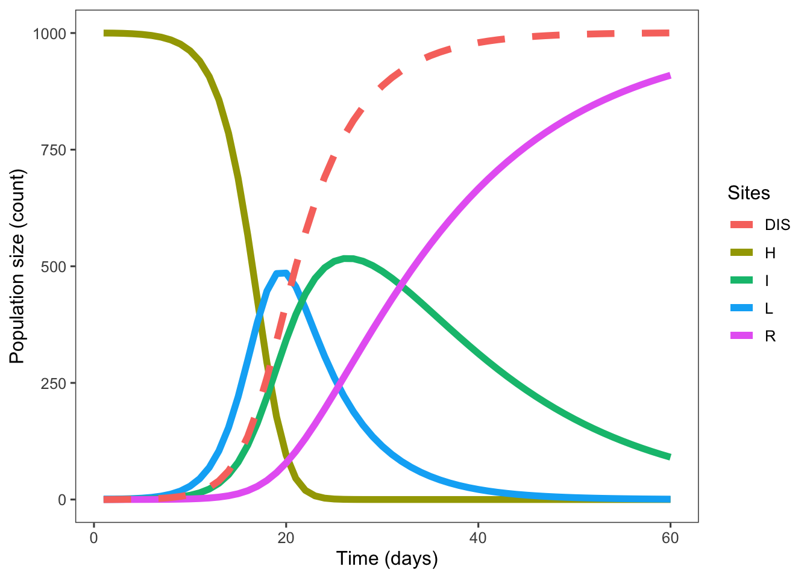

7 Solving equation
steps <- seq(1, 60, by = 1)
parms <- list(beta = beta, gama = gama, mu = mu)
HLIR <- ode(InitCond, steps, HLIR_fun, parms)
epidemics <- data.frame(time = HLIR[, 1], H = HLIR[, 2], L = HLIR[, 3], I = HLIR[, 4], R = HLIR[, 5])7.1 Visualizing HLIR
library(ggthemes)
p1 <- epidemics %>%
ggplot() +
geom_line(aes(time, H, color = "H"), size = 2) +
geom_line(aes(time, L, color = "L"), size = 2) +
geom_line(aes(time, I, color = "I"), size = 2) +
geom_line(aes(time, R, color = "R"), size = 2) +
geom_line(aes(time, I+R, color = "DIS"), size =2, linetype = 2)+
labs(y = "Population size (count)", x = "Time (days)", color = "Sites") +
theme_few()
p1